Now Open and Located on the corner of Highway M and Highway 63, just south of Hayward, WI.
The site was purchased in July of 2017 and construction began two years later.
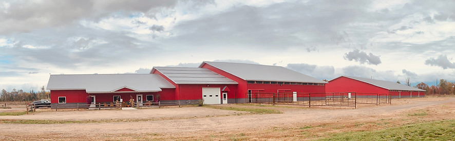
The site is home to:
Small Animal Hospital
Dog & Cat Boarding
Dog Grooming
Large Animal Hospital
Large Animal Hospital Barn
Bluestem Equine & Boarding Center
Clinic Site!
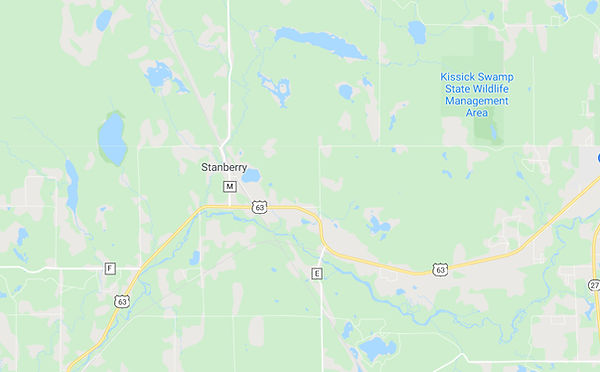
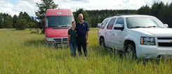
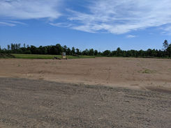
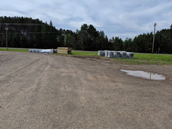
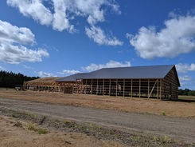
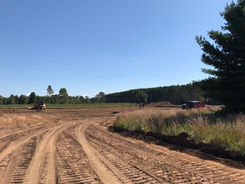
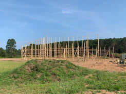
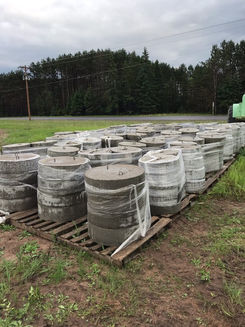
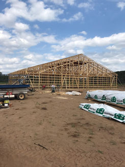
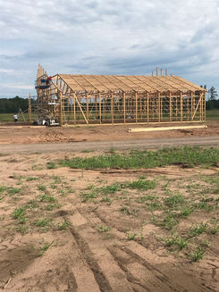
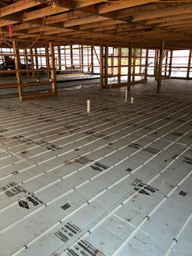
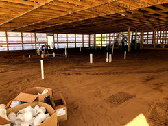
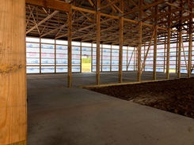
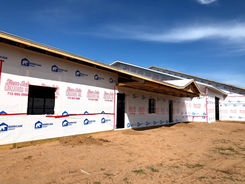
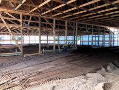
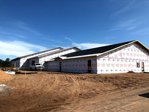
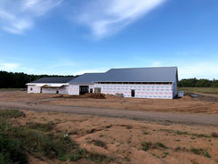
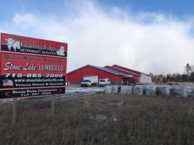
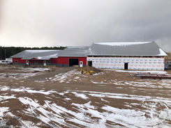
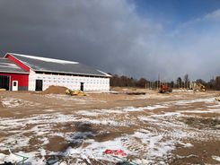